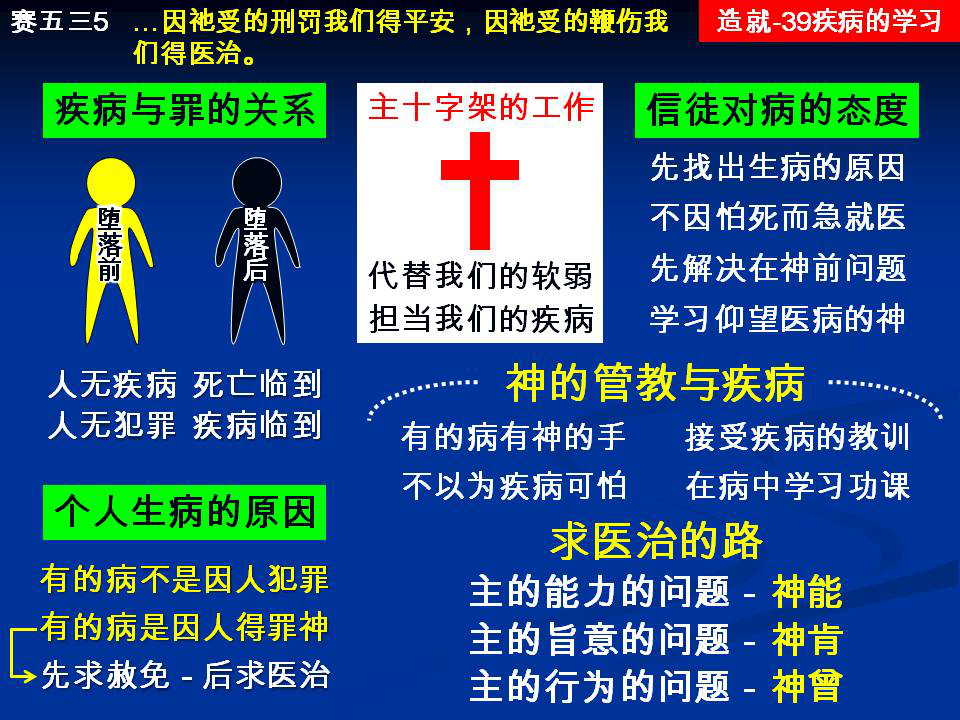

诗歌：540首、324首
重要经文：
出埃及记十五章二十六节：又说，你若留意听耶和华你神的话，又行我眼中看为正的事，侧耳听我的诫命，守我一切的律例，我就不将所加与埃及人的疾病加在你身上，因为我是医治你的耶和华。
哥林多前书十一章三十节：因此，在你们中间有好些软弱的与患病的，睡的也不少。
以赛亚五十三章五节：哪知祂为我们的过犯受创，为我们的罪孽压伤；因祂受的刑罚我们得平安，因祂受的鞭伤我们得医治。
纲目要点：
壹 疾病与罪的关系：
一 有的疾病是因人犯罪得罪神。
二 好些的病需要先求赦免，然后求医治。
贰 主耶稣代替我们的软弱，担当我们的疾病。
参 信徒对于疾病的态度。
肆 神的管教与疾病：
一 有的疾病有神管教的手。
二 不要以为疾病是可怕的事。
三 要在疾病中学习功课。
伍 求医治的路－新约里的三句话：
一 主的能力的问题－『神能』——可二 9。
二 主的旨意的问题－『神肯』——可一 41。
三 主的行为的问题－『神曾』——可十一 23~24。
信息选读：
疾病与罪的关系
人在没有犯罪之先，人没有疾病，人不生病；人在犯罪之后，人才生病。所以，按普通来说，疾病和死亡一样，是从罪恶来的。因一人犯了罪，罪和死就进入了世界。死如何因着罪临到众人，照样疾病也因着罪临到众人。众人虽然没有犯像亚当一样的罪，但是因着亚当犯了罪，众人也都像亚当一样─死了。有了罪就有死。在罪和死之间，有一个东西，我们称它作疾病。这是普通的疾病的来源。可是等到疾病临到个人身上的时候，却有两种不同的原因。一种的疾病，是从罪恶来的；一种的疾病，不是从罪恶来的。有的疾病不是从罪恶来的。我们要把这两个分开。没有罪，定规没有疾病，就像没有罪就没有死亡一样。世界上若没有死亡，就也没有疾病。有了罪，就有死；有了死，就有疾病。但是在个人身上，有许多人生病是因为犯罪；也有许多人生病不是因为犯罪。所以，我们要把个人生病与犯罪的关系，和人类生病与犯罪的关系，有一个清楚的分开。
疾病不一定是从罪来的；但许多疾病是从罪来的
我们有够清楚圣经的话，就是说，有许多人所以生病，乃是因为犯罪。 （不是所有的人。）所以，生病时，第一要查考的，就是有没有得罪神。有许多人，能找出来是因为得罪神，所以生病。按我个人所认识、所知道的弟兄姊妹，我能够引一百几十个人的事，来证明说，他们在主面前查考他们为什么缘故生病，结果找出来都是因为有罪。他们有一次专一的悖逆，有一次专一的不遵守主的话，走错了路。等到他们把那一个罪找出来，承认了之后，疾病也就过去了。许多弟兄姊妹有这样的经历，我也有许多同样的经历。你在神面前一找出原因，病立刻就可以过去。这是医学所没有法子解释的。疾病，不一定是从罪来的；但是许多疾病是从罪来的。以疾病这一个问题来说，像死一样是从罪来的。但是疾病在个人身上，不一定是从罪来的，不过许多时候，也是从罪来的。我们承认，有许多病，能找出它天然的原因，但是我们不要把病都推到天然的原因上去。
我还记得，我有一个同学对我说起，当他在协和医院的时候，有一个教授脾气顶大，但是学问非常好。他考试时，问题总是很简单的。有一次他出一个问题，是很简单的，可是许多人都不能答。他问说，为什么缘故人生肺病？许多同学都答说，因为有结核的菌。凡这样答的，都被他打「×」 。他说，世界上充满结核的菌，那么全世界的人都要生结核病了？他说，结核菌要在合式的条件之下，才会长结核的病；你不能说光有结核的菌，就能长结核的病。学生以为有菌就长病，忘记了要有合式的情形。基督徒生病也是这样。虽然世界上有许多天然的理由，但是需要在那一个合式的条件之下，神才让这件事发生，基督徒才生病。不在那一个合式的条件之下，神就不让这一件事发生。
对于疾病先该找出疾病的原因
每一次，一个信徒一生病，就应该先在主面前寻找这一个生病的原因，不应该很急的在那里寻求医治。现在我们要说到一个疾病的过程。每一个人，一有疾病，第一件事该清楚找出疾病的原因。保罗的病，保罗自己非常清楚，这是一个很好的榜样。神要我们清楚知道那一个疾病的原因在那里。我们要找找看，我有没有违背主？有没有犯罪？有没有亏欠人？有没有违背什么天然的律？有没有特别忽略了什么事情？请你们记得：许多时候，我们违背了天然的律，也是得罪神。因为这些律是神所造的，是神所定规的；神管理宇宙，就是借着这些天然的律。
个人主义是生病最大的原因
有的人有个人主义，随着自己的意思行事，什么都是一个人来，什么都是一个人干。神的管教如果在他身上，他马上生病。因为身体的供应，不能临到这一个肢体。特别是认识召会的人，一有个人主义，立刻会生病。不认识召会的人，反而少病，越认识召会的人，越与召会有关系的人，主把他摆在一种情形里，他一有个人主义，主就不让他过去。有的时候，也许是因为你污秽了你的身体。
不要以为疾病是可怕的事
所以千万不要以为疾病是可怕的事，因为这一把刀，不是在别人手里。我告诉你们说，如果是一位弟兄替我修面，就是用一把大的刀，我也不怕。如果是你的仇敌，他替你理发，就可怕。我们要问说，这一把刀是在谁的手里？如果我和某医生有仇，他要替我施行手术，我怕。如果这一把刀是在弟兄的手里，我不怕。请你们记得，疾病是在神的手里。有许多生病的弟兄姊妹，那么急自己健康的情形，好像疾病是在敌人的手里一样。请你们记得，神把疾病都量过了。
要在疾病中学习功课
有的人一天到晚所想的，都是他自己。整个世界都是为着他的，他是地的中心，他是宇宙的中心，全世界的人都应当为他活着。他一天到晚所想的，都是自己，每一样东西都是围绕着他的。神在天上是为着他的，神在地上是为着他的，基督是为着他的，召会是为着他的，全世界都是为着他的。我告诉你，神没有办法，神必须把他这一个中心打掉。有许多人的病，不容易好，是什么缘故？因为他盼望得着人的同情。我知道，好些姊妹都有这样的经历。许多时候，是你拒绝了人的同情，疾病才好起来。也有许多人生病，是因为他喜欢病。因为只有在生病的时候，人才爱他，所以他喜欢病。不生病，人就不爱你，所以你就要常常生病，好叫人常常爱你；你就要长久的生病，好叫人长久的爱你。我曾看见这样的事实。一直等到有人到他面前去，重重的责备他一下，告诉他说，你这样生病，是因为你爱自己，是因为你要人爱你，是因为你盼望借着病得着人的注意，借着病叫人来看你，借着病叫人来体谅你，所以你老是病。 （摘自初信造就第三十九篇）
课程复习：
一 请说明疾病与罪有什么关系？
二 疾病不一定是从罪来的；但是许多疾病是从罪来的。请说明之？
三 为什么对于疾病先该找出疾病的原因？
四 为什么个人主义是生病最大的原因？
五 我们若是在疾病中，要学习怎样的功课？
辅助图表：
